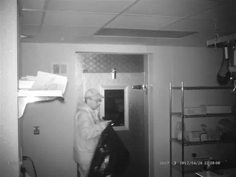
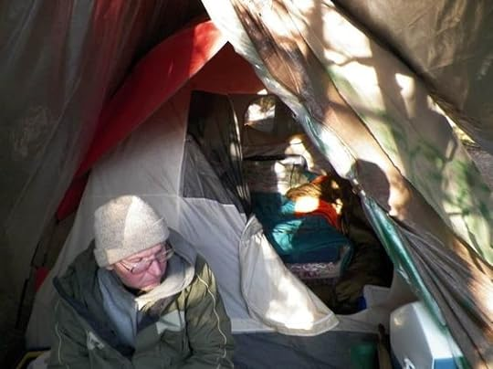

The North Pond Hermit
Chapter 6, Primary reinforcer
Primary reinforcers are reinforcers
that have innate reinforcing qualities. These kinds of  reinforcers are not learned. Water, food, sleep, shelter,
sex, and touch, among others, are primary reinforcers.
reinforcers are not learned. Water, food, sleep, shelter,
sex, and touch, among others, are primary reinforcers.
“He is deeply, almost dangerously hungry. Back at his tent, his edible supplies are a couple of crackers, some ground coffee, and a few packets of artificial sweetener. That’s it. If he’d waited much longer, he would have risked becoming tent-bound from weakness. He shines his light on boxes of hamburger patties and blocks of cheese, bags of sausage and packs of bacon. His heart leaps and his stomach calls and he sets upon the food, loading it into his backpack; smorgasbord”(Finkel, p.14).
Christopher Knight's need for food served as a primary reinforcer in his decision to commit over one thousand break-ins during his nearly three decades in the wilderness (Finkel p. 14). In the pursuit of satisfying his fundamental need for food, the act of breaking into cabins became directly linked to the rewarding outcome of obtaining food and satiating his hunger. This association established a powerful reinforcement for Knight, as the basic necessity of nourishment drove him to repeat the behavior for twenty seven years. The primal instinct to secure sustenance can strongly influence behavior, and in Knight's case, the need for food acted as a primary reinforcer, shaping his actions in the isolated wilderness where survival presented itself as a constant challenge.
Chapter 4, Sleep Debt
Sleep debt, also known as sleep deficit,
is the difference between how much sleep one needs and how much they
actually get. If one regularly loses
sleep or chooses to sleep less than needed, the sleep loss adds up, and the total sleep lost is called their
sleep debt.
Sleep debt, stemming from chronic insufficient sleep, is a common theme in Knight's story, with explicit references to his sleeping habits during harsh Maine winters and his troubled rest while incarcerated. Twenty-six brutal winters, Knight implemented a nightly routine to endure the cold, sleeping only six and a half hours and waking at two a.m. to combat the frigid temperatures. Knight's deliberate avoidance of daytime naps underscores his commitment to achieving as deep and replenishing sleep as he could during the night. "No matter how tempted he was to crawl back into his covers, he resisted. Naps were not permitted in his ideology, as they ruined his ability to achieve deep, rejuvenating sleep" (Finkel, p 98). This pattern of consistently obtaining around six hours of sleep each night during extended winter periods undoubtedly resulted in substantial sleep debt. Moreover, Knight's seven-month incarceration revealed another facet of his struggle with sleep. The unfamiliar and anxiety inducing jail environment disrupted his sleep, leading to constant tiredness and anxiety. Knight candidly admitted, "You asked how I sleep. Little and uneasy. I am nearly always tired and nervous" (Finkel, p. 41). These experiences underscore the pervasive impact of sleep debt on Knight's well-being, manifested in his perpetual fatigue and heightened state of anxiety.
Chapter 3, Sympathetic Nervous System
The sympathetic nervous system is
a subdivision of the autonomic nervous system that triggers the fight-or-flight response,
providing the body with
a burst of energy to respond to perceived dangers.”
“During a burglary, there wasn’t a moment’s ease. “My adrenaline was spiking, my heart rate was soaring. My blood pressure was high. I was always scared when stealing. Always. I wanted it over as quickly as possible.” The only time he paused for more than a moment during a raid was when the weather was cold and he needed to thaw something out. If meat was frozen, he’d pop it in the microwave” (Finkel, p. 81).
During his break-ins to nearby cabins and camps, Knight's sympathetic nervous system played an important role in initiating the fight-or-flight response. As he entered properties to steal supplies, his senses heightened, and his body prepared for action. The sympathetic nervous system, often referred to as the body's "gas pedal," kicked in, releasing adrenaline into his bloodstream. This surge of adrenaline increased Knight's heart rate, dilated his airways, and provided a burst of energy, enabling him to swiftly navigate the unfamiliar terrain and make quick decisions to help avoid detection (Finkel p. 81)
Chapter 6 lecture, Displaced Aggression
"Displaced aggression is the direction of hostility away
from the source of frustration or anger and toward either the self or a different entity.”
“I’m not sorry about being rude if it gets to the point quicker,” he said. Here’s what he had written in a letter about an author photo of mine he’d seen in the sample packet of writing I’d mailed him: “You look particularly nerdy. Next time, have your wife pick the picture.” When I mentioned during the visit that my son’s name is Beckett, he said, “Ugh. Terrible. Why did you name him that? He’s going to hate you when he gets older.” (Finkel p. 48).
Aggression displacement involves directing frustration, anger and aggression at a less threatening target than the original triggering person or experience. Knight, not being one to have a physical altercation with someone, uses rude remarks to lash out against Finkel. This is a prime example of displaced anger. Knight cannot lash out against the guards, police nor judge that have incarcerated him. Doing so would result in more repercussions for Knight. Instead he chooses to direct his anger towards Finkel who is hundreds of miles away. Aiming his frustration towards Finkel has no direct consequences and very little risk of retaliation other than a strongly worded letter or not receiving a reply. Both of which would likely not bother Knight as he is used to isolation and no communication at all.
Chapter 4, Meditation
Meditation is a practice of clearing the mind in order to achieve a state of relaxed awareness and focus.
Knight's engagement with meditation emerges as a psychological  strategy, offering him a coping mechanism within his jail cell. "I found relief and release in the act of imagining the woods just beyond the cinder-block walls… He could almost hear the “song of salt and fat frying” as he cooked on his camp stove. Mostly, he just wished for quiet—“all the quiet I can take, consume, eat, dine upon, savor, relish, feast.” "(Finkel, p. 41) expressing a deep desire for the serenity of nature . This vivid visualization, complete with details of flourishing wildflowers and the sizzling sounds of cooking, signifies his effort to immerse himself in a meditative escape (Finkel, p. 41). A manifestation of mindfulness meditation. Here, the psychological impact is palpable as Knight employs this technique to concentrate on sensory details, momentarily transporting himself from the harsh reality of incarceration.
Knight's meditation practice follows a pattern but is not consistent, surfacing in moments of imminent danger. He states, "I didn’t meditate every day, month, season in the woods. Just when death was near. Death in the form of too little food or too much cold for too long” (Finkel, p. 42). This unveils a distinctive psychological function of meditation for Knight. It becomes a tool for confronting mortality and extreme challenges. By engaging in mindfulness meditation during life-threatening situations, Knight utilizes the practice to ground himself in the present moment, finding mental solace and resilience. These instances underscore the psychological impact of meditation on Knight's well being, enabling him to cope with his harsh conditions.
Chapter 7, Representative Bias
A faulty way of thinking, in which you unintentionally stereotype someone or something.
“The man is wearing new-looking blue jeans, a hooded gray sweatshirt beneath a nice Columbia jacket, and sturdy work boots. It’s like he has just gone shopping at the mall. His backpack is from L. L. Bean. Only his eyeglasses, with chunky plastic frames, seem outdated. There’s no dirt on him anywhere, and little more than a shading of stubble on his chin. He has no noticeable body odor. His thinning hair, mostly covered by his wool cap, is neatly cropped. His skin is strangely pale, with several scabs on his wrists. He’s a little over six feet tall and broad-shouldered, maybe one hundred and eighty pounds” (Finkel, p.20)
“At one cabin, where the camera was hidden in a smoke detector, there was success: the hermit was captured on film, peering into a refrigerator. The images were confusing. The thief’s face wasn’t in focus, but they appeared to show a clean, well-dressed man who was neither emaciated nor bearded—highly unlikely to have been roughing it in the woods. He didn’t appear nimble, or strong, or even outdoorsy. “Mr. Ordinary,” one person called him. It was probable, people deduced, that this so-called hermit had been a neighbor all along” (Finkel, p. 32).
Representative bias is a cognitive bias that occurs when individuals assess the likelihood of an event based on how well it conforms to a stereotype. This can lead people to make judgments and predictions based on superficial similarities, often overlooking rational probabilities or the larger context. For instance, if a person's stereotype of a teacher is an older woman with glasses, they might assume that a person fitting this description is more likely to be a teacher than a younger person without glasses. Representative bias can result in faulty reasoning, as it fails to consider the diversity and complexity of real-world situations.
Knight's case is full of instances of representative bias, where observers unintentionally stereotype him based on their stereotyped notions of a hermit. The description of Knight's appearance, new-looking blue jeans, a hooded gray sweatshirt, and a Columbia jacket, challenges the typical image that comes to mind with a hermit living in the woods (Finkel, p.20). Despite the evidence, the assumption of a clean, well-dressed man, neither emaciated nor bearded,caused doubt if Knight was truly a hermit. The images from the hidden camera, showing Knight looking into a refrigerator, added to the confusion, leading people to dub him "Mr. Ordinary" and assuming he was a neighbor all along (Finkel, p.32). The notion that a hermit conforms to certain physical characteristics or behaviors is a representative bias, hindering a more accurate understanding of Knight's complex situation. This bias contributed to misconceptions about his identity and of his unconventional lifestyle.